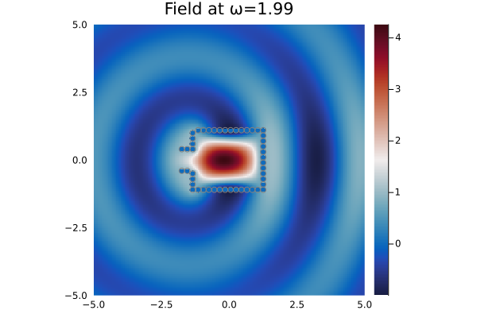
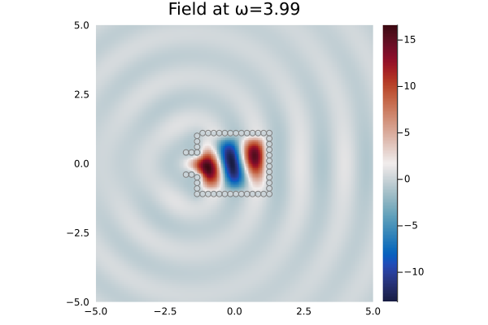
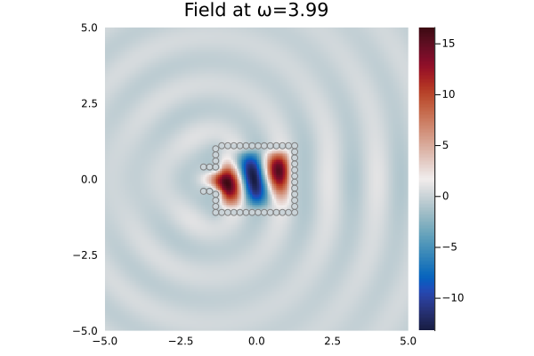

Helmholtz resonator
The code Resonator.jl simulates a 2D Helmlholtz resonator by aligning particles in the shape of a bottle.
A Helmholtz resonator is made of a cavity with a small opening mouth. When illuminated with an acoustic waves at its specific resonant frequencies, the scattered field inside the cavity reaches high amplitudes. Those frequencies of course depend on the dimensions of the resonator that we set below.
using MultipleScattering
using Plots
# The four parameters below are all the required dimensions of the resonator.
cavity_radius = 1.0;
cavity_length = 2.5;
mouth_radius = 0.3;
mouth_length = 0.5;To simulate the resonator, we align small circular particles to form a cavity. In the code below, the positions of the particles are stored in the vector X.
radius = .1; # radius of the particles
d_particle = 2.001*radius; # distance between centers
# define the cavity of the resonator
cavity_up = [
[x,cavity_radius+radius]
for x = radius:d_particle:cavity_length];
cavity_down = [
[x,-cavity_radius-radius]
for x = radius:d_particle:cavity_length]
cavity_right = [
[cavity_length+.05*radius,y]
for y = (- cavity_radius - radius):d_particle:(cavity_radius+2*radius)]
# define the mouth of the resonator
mouth_connect_down = [
[radius-d_particle,y]
for y=(-cavity_radius-radius):d_particle:(-mouth_radius)]
mouth_connect_up = [
[radius-d_particle,y]
for y=(mouth_radius+radius):d_particle:(cavity_radius+2*radius)]
mouth_up = [
[x,mouth_radius+radius]
for x = radius-2*d_particle:-d_particle:-mouth_length-radius]
mouth_down = [
[x,-mouth_radius-radius]
for x = radius-2*d_particle:-d_particle:-mouth_length-radius]
# put the different pieces together
X = [cavity_up; cavity_down; cavity_right; mouth_connect_down; mouth_connect_up; mouth_up; mouth_down];
X = [x - [cavity_length/2,cavity_radius/2-0.5] for x in X];Now we can define the resonator:
particle_medium = Acoustic(2; ρ = 0., c = 0.);
Resonator = [
Particle(particle_medium, Circle(x, radius))
for x in X];
plot(Resonator)
savefig("Resonator.png")
Next we calculate the scattered field for an incoming plane wave at different frequencies.
host_medium = Acoustic(2; ρ=1.0, c=1.0); # medium of the background, 2 is the dimension of the setting.
source = plane_source(host_medium; direction = [1.0,0.0])
# region where the result will be plot
M=N=5.0;
bottomleft = [-M;-N]; topright = [M;N];
region = Box([bottomleft, topright]);
sim = FrequencySimulation(Resonator, source);
list_ω = [1.99,3.99,2.74]
result = run(sim, region, list_ω, basis_order=5, only_scattered_waves = true; res=200)We plot the results for the different frequencies and observe that $\omega_0=1.99$ and $\omega_1=3.99$ correspond to resonant frequencies.
for p=1:3 # loop on the different frequencies
plot(result, list_ω[p]; seriestype = :heatmap) # clim=(-5.0,5.0)
colormap("RdBu")
plot!(Resonator,colorbar=true,
title="Field at ω="*string(list_ω[p]),axis=false, xguide ="", yguide ="")
savefig("plot_"*string(p)*".png")
end
The following plots are obtained:
  
